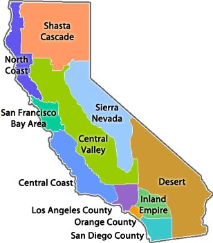

Select a Region

Episode Information
Huell Burnley Howser was an American television host best known for "California's Gold", a travel show which explores the history, culture, and people of California.
Before his passing in 2013, Howser donated his collection of "California's Gold" episodes, as well as those of his other series, to Chapman University.
This application shows the loaction and description of a few of Howser's "California Gold" episodes. Episode information was collected from KCET PBS and Chapman University.